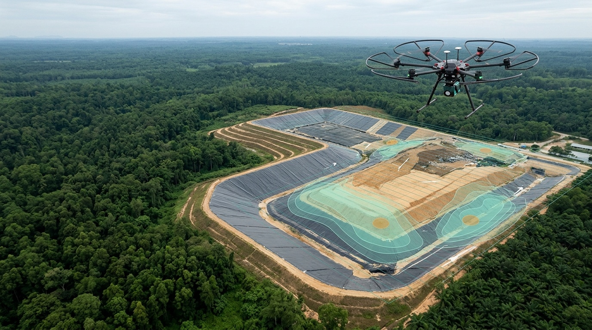
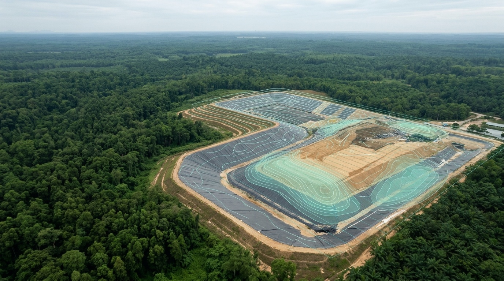
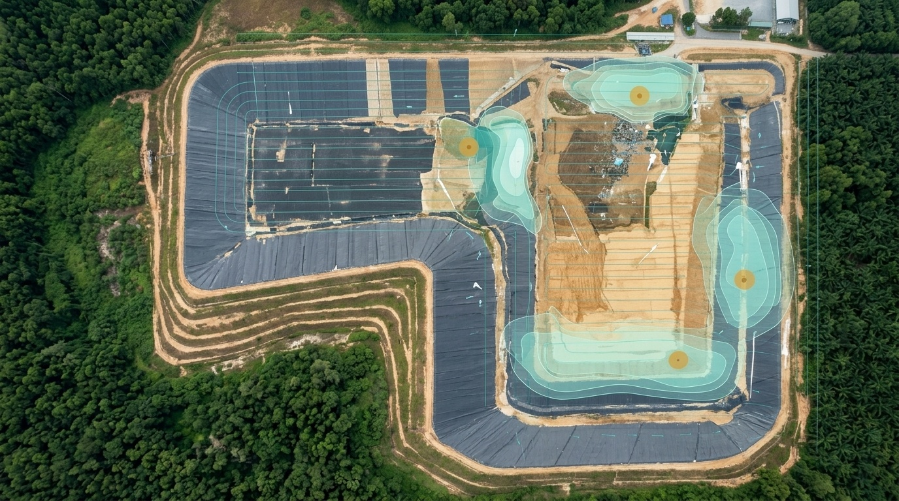
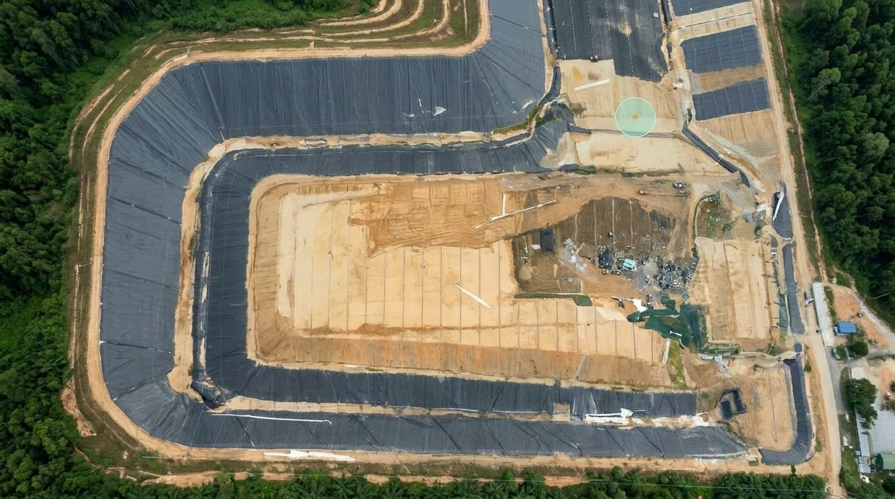
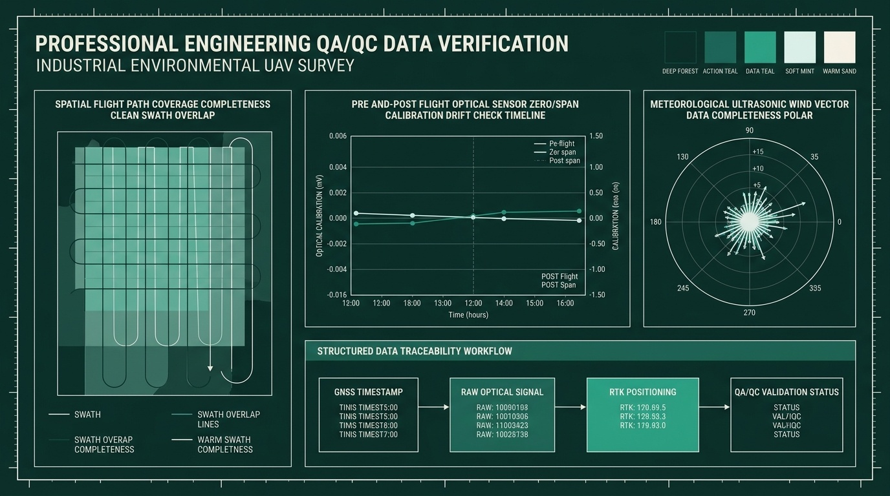
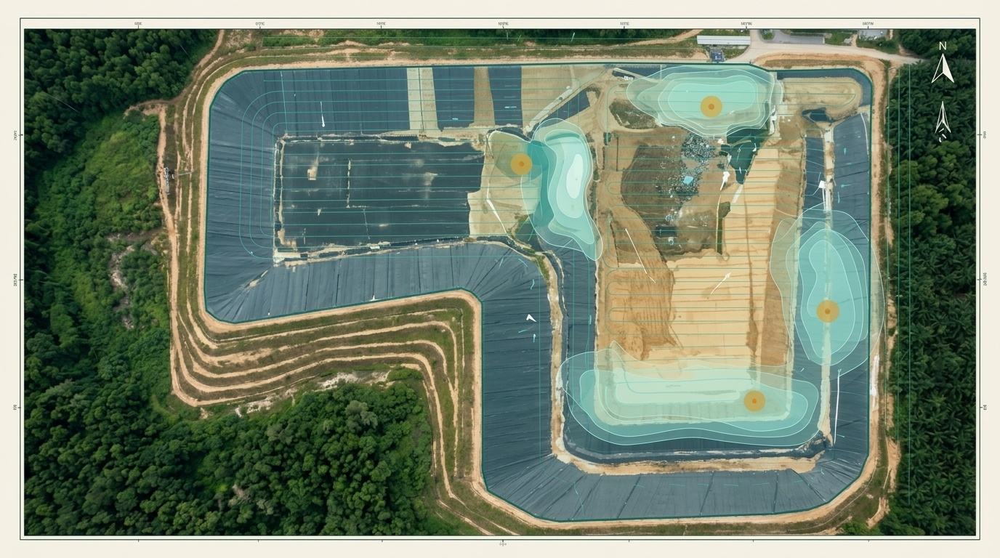
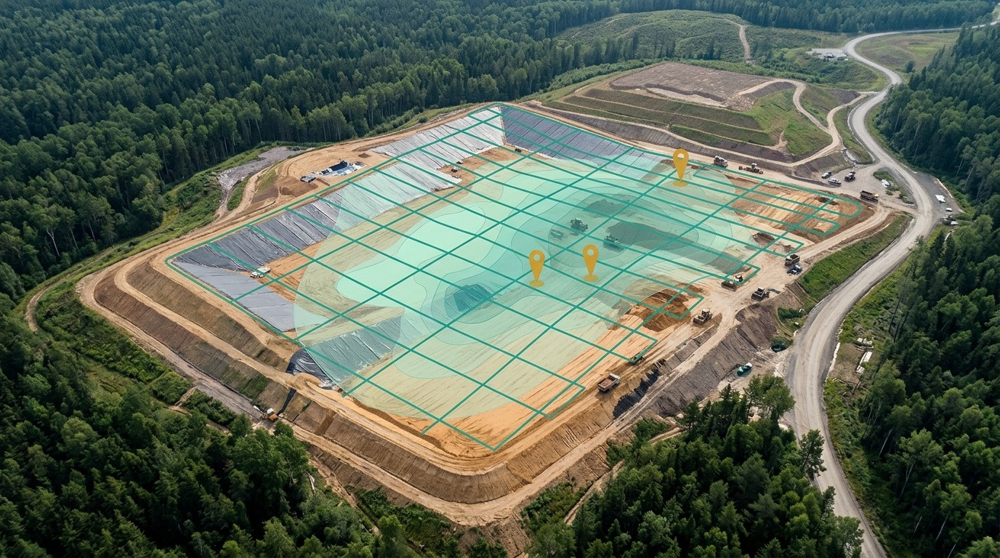
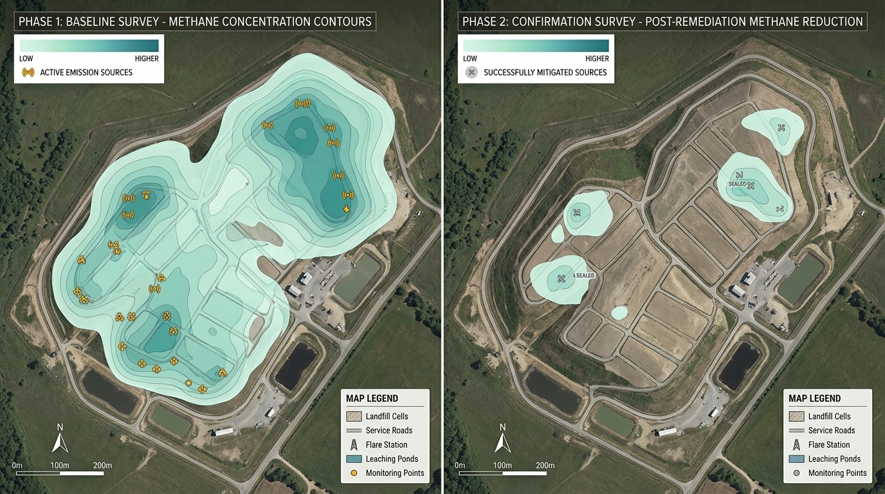
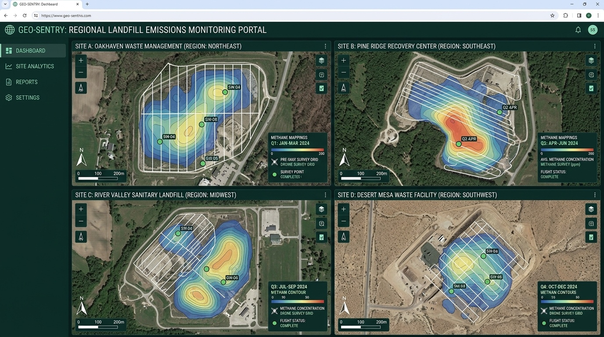

CH₄
Khảo sát CH₄ bằng UAV
Thu chuỗi nồng độ methane trên bề mặt bãi bằng UAV mang cảm biến chuyên dụng.
Đã xác minh về phương pháp; model cảm biến cần GASCOLAE xác nhận.
GASCOLAE S0271
Lập bản đồ phát tán methane, định vị điểm phát thải cao và đo lặp trước–sau biện pháp khắc phục. Khi đủ điều kiện định lượng, kết quả CH₄ giảm được quy đổi sang CO₂e kèm dải bất định.

S0271 / BỐI CẢNH KHẢO SÁT
Khó bố trí điểm đo cố định và khó bao phủ toàn bộ bề mặt bãi bằng khảo sát theo điểm.

Không có tọa độ điểm phát thải cao khiến đội vận hành khó xếp thứ tự kiểm tra và sửa chữa.
Khó chứng minh hiệu quả biện pháp khắc phục và cung cấp dữ liệu cho kiểm kê hoặc thẩm định bên thứ ba.
S0271 / CÔNG NGHỆ
CH₄
Thu chuỗi nồng độ methane trên bề mặt bãi bằng UAV mang cảm biến chuyên dụng.
Đã xác minh về phương pháp; model cảm biến cần GASCOLAE xác nhận.
WIND
Ghép dữ liệu gió với chuỗi đo CH₄, vị trí, độ cao và thời gian.
GNSS/RTK
Ghép CH₄ với GNSS/RTK, độ cao và thời gian để định vị dữ liệu đo.
GIS
Thể hiện dữ liệu trên bản đồ để khoanh vùng điểm phát thải cao và ưu tiên vị trí cần kiểm tra.
QA/QC
Kiểm tra hiệu chuẩn, độ trôi, độ trễ và độ phủ; lưu hồ sơ truy vết cho dữ liệu đo.
Ngưỡng cần xác minh.
FLUX
Flux, lượng CH₄ giảm, hiệu suất thu gom và tCO₂e chỉ được tính khi thiết kế bay, dữ liệu gió, dữ liệu vận hành và phương pháp đáp ứng điều kiện; kết quả kèm dải bất định.
Đã xác minh về nguyên tắc; ngưỡng và bộ hệ số cần xác minh. Áp dụng từ Level 2; không suy tCO₂e trực tiếp từ ppm.
S0271 / HÀNH TRÌNH ĐO LƯỜNG
DETECT
Khảo sát CH₄ bằng UAV để phát hiện vùng methane cao trên bề mặt bãi.
LOCATE
Gắn tọa độ GNSS và lập bản đồ để ưu tiên vị trí cần kiểm tra, khắc phục.

QUANTIFY
Flux, lượng CH₄ giảm, hiệu suất thu gom và tCO₂e chỉ được tính khi thiết kế bay, dữ liệu gió, dữ liệu vận hành và phương pháp đáp ứng điều kiện; kết quả kèm dải bất định.
Từ Level 2. Nếu thiếu điều kiện, chỉ bàn giao kết quả sàng lọc.
VERIFY
So sánh kỳ nền và kỳ xác nhận sau khắc phục khi hai kỳ đủ điều kiện so sánh.
Cung cấp dữ liệu hỗ trợ thẩm định, không phải chứng thư xác minh.

REPORT
Bàn giao bản đồ CH₄, danh sách điểm phát thải cao và hồ sơ QA/QC; báo cáo trước–sau, flux và CO₂e kèm bất định khi đủ điều kiện từ Level 2.

S0271 / ĐỐI CHIẾU TRƯỚC–SAU
So sánh trước–sau chỉ có ý nghĩa khi hai kỳ đủ điều kiện tương đương. Việc lượng hóa thay đổi cần đáp ứng điều kiện dữ liệu và phương pháp, kèm dải bất định.
Phát video và kéo thanh thời gian để xem từng thời điểm.
Mở video so sánh trực tiếpS0271 / HỒ SƠ BÀN GIAO
Phân bố nồng độ bề mặt, tọa độ GNSS và mức ưu tiên kiểm tra.

Vết bay và hướng gió trong hồ sơ truy vết dữ liệu khảo sát.
Hồ sơ hiệu chuẩn, độ phủ và tính đầy đủ dữ liệu.
Chênh lệch kỳ nền–xác nhận, flux, CH₄ giảm và tCO₂e kèm bất định khi đủ điều kiện.
Flux, lượng CH₄ giảm, hiệu suất thu gom và tCO₂e chỉ được tính khi thiết kế bay, dữ liệu gió, dữ liệu vận hành và phương pháp đáp ứng điều kiện; kết quả kèm dải bất định.
S0271 / PHẠM VI DỊCH VỤ

Level 1 ONE SITE / ONE SURVEY
Sàng lọc và lập bản đồ nguồn trong một khu vực, một kỳ đo.
Bản đồ CH₄, điểm cần kiểm tra, vết bay và QA/QC; không tính flux hoặc tCO₂e.
Liên hệ tư vấnHình ảnh minh họa

Level 2 ONE SITE / TWO MOMENTS
Định lượng toàn bãi và đo lặp kỳ nền–xác nhận.
Toàn bộ Level 1 cho hai kỳ; flux, hiệu suất thu gom khi có dữ liệu, CH₄ giảm, tCO₂e và lớp GIS khi đủ điều kiện.
Flux, lượng CH₄ giảm, hiệu suất thu gom và tCO₂e chỉ được tính khi thiết kế bay, dữ liệu gió, dữ liệu vận hành và phương pháp đáp ứng điều kiện; kết quả kèm dải bất định.
Liên hệ tư vấnHình ảnh minh họa

Level 3 MULTIPLE SITES / TIME SERIES
Giám sát định kỳ nhiều bãi và hỗ trợ thẩm định.
Toàn bộ Level 2 theo kỳ; chuỗi thời gian, phân tích bất định, hồ sơ bằng chứng và Web GIS Dashboard.
Flux, lượng CH₄ giảm, hiệu suất thu gom và tCO₂e chỉ được tính khi thiết kế bay, dữ liệu gió, dữ liệu vận hành và phương pháp đáp ứng điều kiện; kết quả kèm dải bất định.
Hỗ trợ kiểm kê/thẩm định nhưng không thay Method 21, không cấp chứng thư và không phát hành tín chỉ carbon.
Liên hệ tư vấnHình ảnh minh họa
S0271 / GASCOLAE
Kết nối phát hiện → định vị → khắc phục → bay xác nhận → lượng hóa thay đổi.
Flux, lượng CH₄ giảm, hiệu suất thu gom và tCO₂e chỉ được tính khi thiết kế bay, dữ liệu gió, dữ liệu vận hành và phương pháp đáp ứng điều kiện; kết quả kèm dải bất định.
Kết hợp bản đồ không gian, gió, dữ liệu vận hành và nhật ký cho từng chuyến bay.
Tách rõ sàng lọc với định lượng; hỗ trợ kiểm kê/thẩm định nhưng không thay Method 21, không cấp chứng thư xác minh và không phát hành tín chỉ carbon.
S0271 / CÂU HỎI THƯỜNG GẶP
Không. ppm là nồng độ tại thời điểm đo. Cần ước tính flux từ thiết kế lấy mẫu và dữ liệu gió, sau đó áp dụng hệ số được duyệt; nếu thiếu điều kiện thì chỉ bàn giao kết quả sàng lọc.
Không. Dịch vụ bổ trợ bằng cách bao phủ diện rộng và ưu tiên vị trí kiểm tra; không thay phép đo mặt đất phục vụ tuân thủ.
Không. Dịch vụ cung cấp dữ liệu và hồ sơ hỗ trợ thẩm định, không phải chứng thư xác minh và không tự phát hành tín chỉ carbon.
Theo site/đợt hoặc chu kỳ, phụ thuộc diện tích, Level, số kỳ, cấu hình cảm biến, hiện trường, mô hình và QA/QC. Giá hiện có là đề xuất tham khảo; cần Sales/Finance phê duyệt trước khi báo giá chính thức.
DEMO · Giao diện tư vấn
Tôi có thể giải thích dịch vụ, so sánh ba Level và giúp bạn chuẩn bị thông tin cho buổi tư vấn.
Chưa kết nối AI. Các câu trả lời dưới đây là nội dung tham khảo được chuẩn bị sẵn từ tài liệu S0271.
Liên hệ chuyên gia GASCOLAEPhạm vi cụ thể và các câu hỏi về kỹ thuật, HSE, pháp lý, giá hoặc thẩm định cần chuyên gia xác nhận.
Nội dung tham khảo
Dịch vụ sử dụng UAV công nghiệp mang cảm biến CH₄, cảm biến gió và GNSS/RTK để thu dữ liệu methane đồng bộ theo vị trí, độ cao và thời gian. Dữ liệu được hiệu chỉnh, QA/QC và thể hiện trên bản đồ nhằm khoanh vùng điểm phát thải cao, hỗ trợ đội vận hành kiểm tra và khắc phục. Với Level 2 hoặc Level 3, kỳ nền được so sánh với kỳ xác nhận.
Flux, lượng CH₄ giảm, hiệu suất thu gom và tCO₂e chỉ được tính khi thiết kế bay, dữ liệu gió, dữ liệu vận hành và phương pháp đáp ứng điều kiện; kết quả kèm dải bất định.
Không thay thế khảo sát tuân thủ hoặc chứng thư xác minh.
Nội dung tham khảo
Flux, lượng CH₄ giảm, hiệu suất thu gom và tCO₂e chỉ được tính khi thiết kế bay, dữ liệu gió, dữ liệu vận hành và phương pháp đáp ứng điều kiện; kết quả kèm dải bất định.
Hỗ trợ kiểm kê/thẩm định nhưng không thay Method 21, không cấp chứng thư và không phát hành tín chỉ carbon.
Nội dung tham khảo
Flux, lượng CH₄ giảm, hiệu suất thu gom và tCO₂e chỉ được tính khi thiết kế bay, dữ liệu gió, dữ liệu vận hành và phương pháp đáp ứng điều kiện; kết quả kèm dải bất định.
Nội dung tham khảo
Không. ppm là nồng độ tại thời điểm đo. Cần ước tính flux từ thiết kế lấy mẫu và dữ liệu gió, sau đó áp dụng hệ số được duyệt; nếu thiếu điều kiện thì chỉ bàn giao kết quả sàng lọc.
Flux, lượng CH₄ giảm, hiệu suất thu gom và tCO₂e chỉ được tính khi thiết kế bay, dữ liệu gió, dữ liệu vận hành và phương pháp đáp ứng điều kiện; kết quả kèm dải bất định.
Level 1 không tính flux hoặc tCO₂e. Định lượng có điều kiện áp dụng từ Level 2.
Hỗ trợ kiểm kê/thẩm định nhưng không thay Method 21, không cấp chứng thư và không phát hành tín chỉ carbon.
S0271 / TƯ VẤN PHẠM VI
Không yêu cầu tải lên dữ liệu Restricted tại form công khai. Báo giá, lịch bay và khả năng định lượng chỉ xác nhận sau bước rà soát kỹ thuật, HSE, pháp lý và dữ liệu.